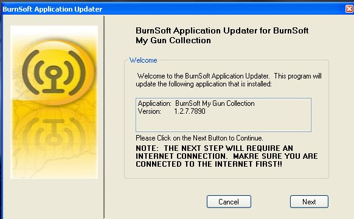
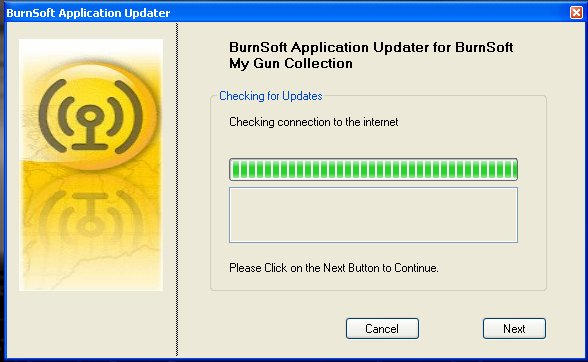
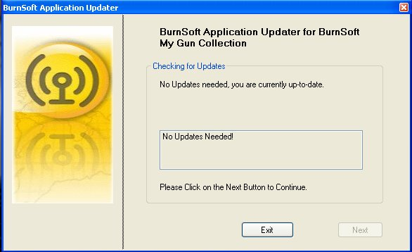
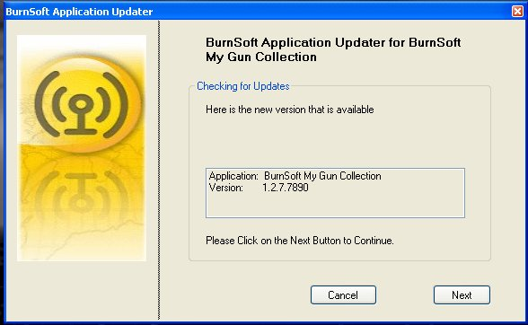
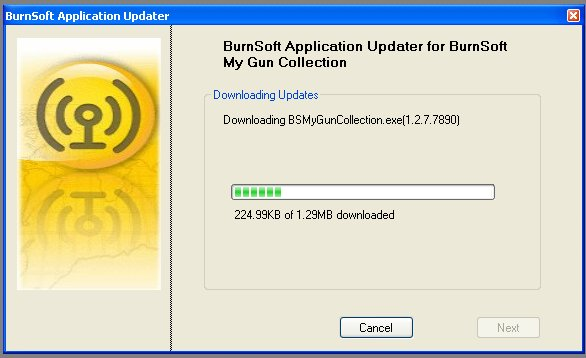
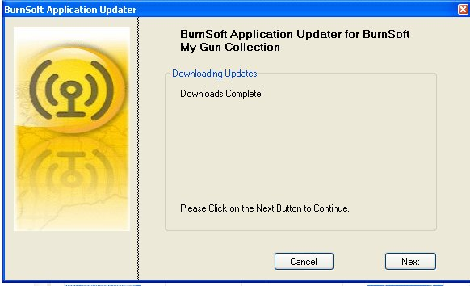
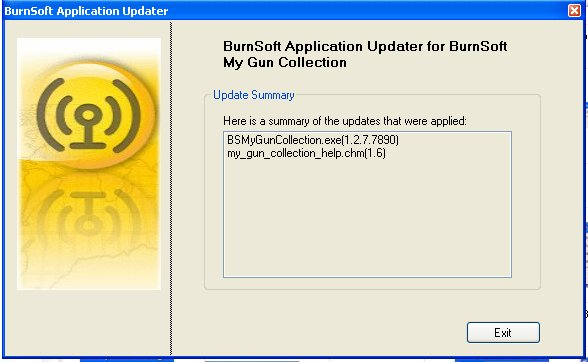

When you click on the Update Option in the application or on the Update Icon ( )
in the program directory it will bring up the following screen:

Right now it is tell you the application that it is going to check for updates and the
current version that you are running at.
Before you click on the Next Button, Make sure that you are connected to the internet.
Now the application is connecting to the BurnSoft Server to see if there are any updates
for your application.

If there are no updates for your application it will give you the following message:

If you do not get this message, proceed to step 5
It looks like you have an update!

Click on the "Next" button to continue and download the updates.
Once you click on "Next" it will download the updates for your application:
Wait Until you get the "Downloads Complete" message before going to the
next step.


Here is an update on what was downloaded, once you finish looking over the summary,
click on the Exit Button to exit the program.
